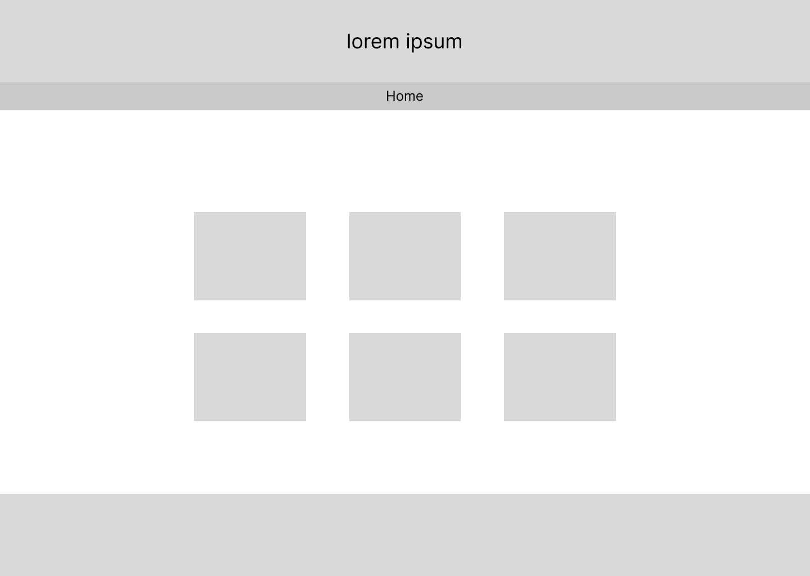
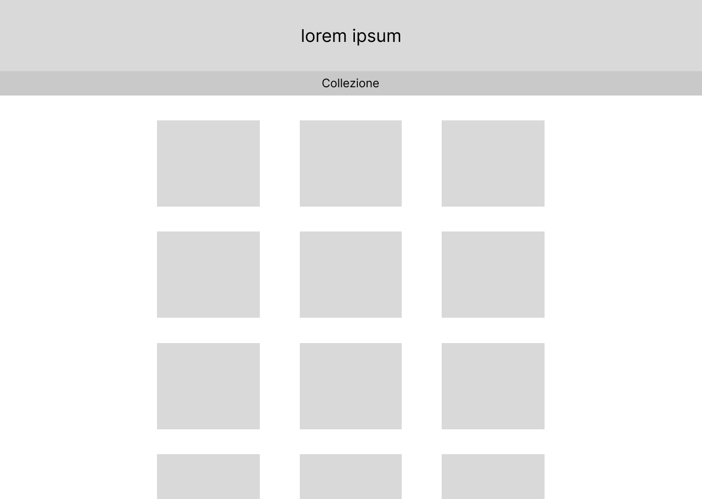
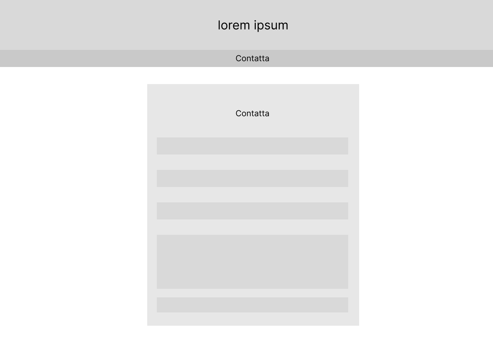

Idea
Il progetto consiste in una collezione digitale di ricette tradizionali provenienti da diverse culture culinarie.
L’obiettivo è preservare il patrimonio gastronomico, offrendo uno strumento pratico e intuitivo per appassionati,
studenti di gastronomia e turisti culinari. Ogni ricetta è presentata in modo dettagliato con ingredienti, istruzioni e fotografie,
organizzata attraverso metadati (ispirati al Dublin Core) e resa facilmente consultabile grazie a un’interfaccia con filtri e ricerca.
Brief
- Finalità e obiettivi del progetto: Condividere e valorizzare ricette tradizionali di diverse culture, offrendo supporto pratico e promuovendo il patrimonio culinario.
- Pubblico di riferimento: Appassionati di cucina, studenti di gastronomia, turisti culinari.
- Accesso alla risorsa: Sito web pubblico, responsive e multipiattaforma (desktop e mobile).
- Contenuti: Ogni ricetta è un “item” con titolo, ingredienti, istruzioni, foto e metadati (regione di origine, difficoltà, ecc.), raccolti da fonti affidabili e con immagini da risorse libere.
Layout
-
HomePage:
Header con menù di navigazione, sezione introduttiva e link alle collezioni.

-
Collezione:
Elenco delle ricette con miniature e sidebar con filtri (tipo, difficoltà, ecc.).

-
Contatti:
Sezione dedicata al form di contatto e feedback degli utenti.

Usabilità
- Architettura: Struttura chiara con filtri per keywords e breadcrumbs per facilitare la navigazione.
- Aspetto e tipografia: Design semplice e intuitivo con colori caldi (rosso, beige, toni sabbia), font leggibili, titoli in grassetto e testi ben spaziati
Font Usato: Montserrat
.
Palette di colori
-
#d32f2f
#f8f9fa
Servizi
-
Strumenti di browsing:
- Briciole di pane (breadcrumbs)
- Nav bar
- Filtri per keywords e barra di ricerca
- Pagination per la gestione dell’elenco
-
Strumenti di interazione:
- Grid di foto
- Card interattivi
- Collegamento tramite keywords per ricette simili
Bibliografia e Sitografia
- Siti: GialloZafferano, AllRecipes, Unsplash e portali di cucina araba per ispirazione e immagini.
- Libri: “La Cucina Italiana”, “Feast: Food of the Islamic World”.